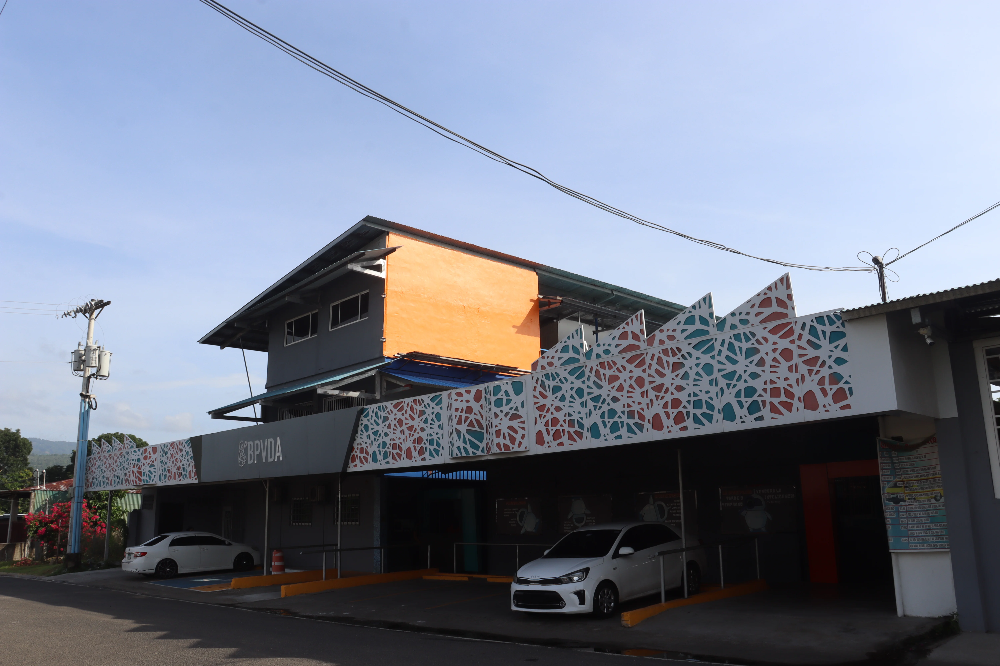
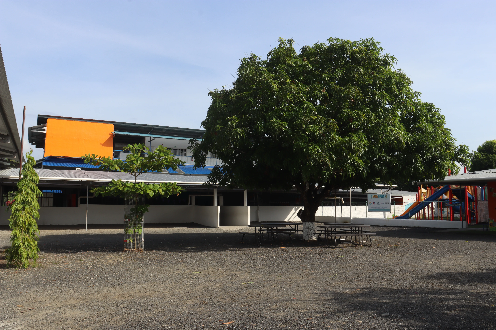
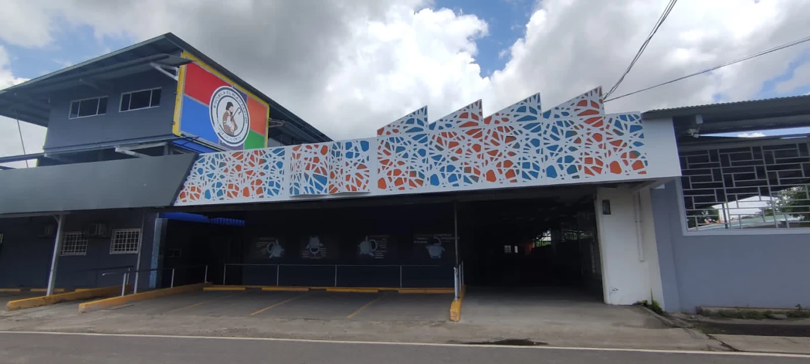
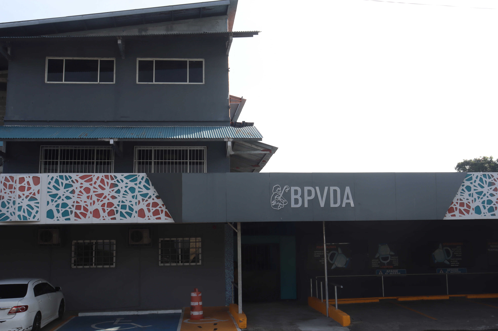
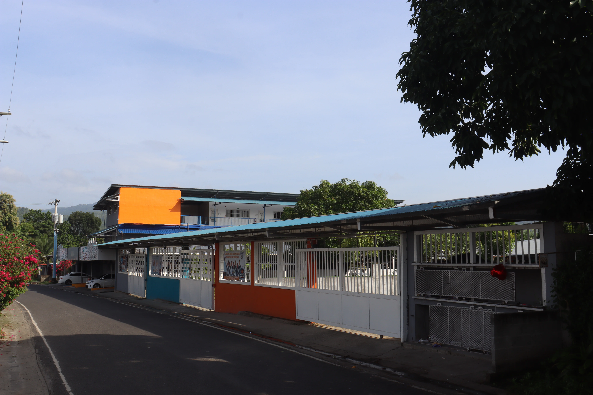
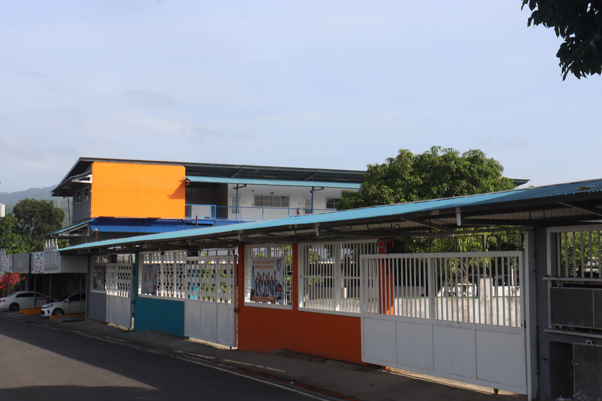
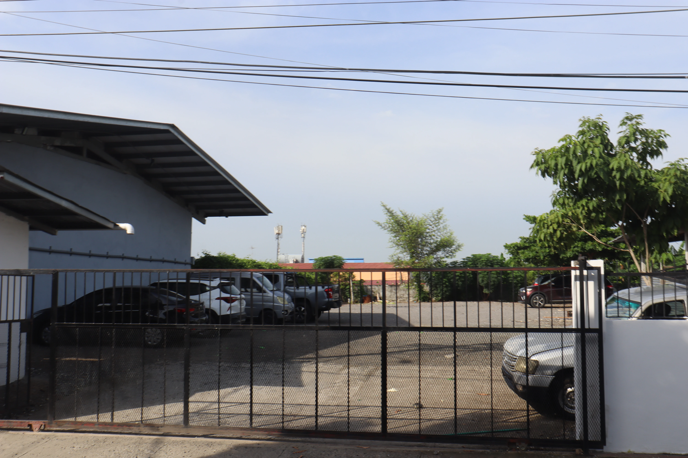
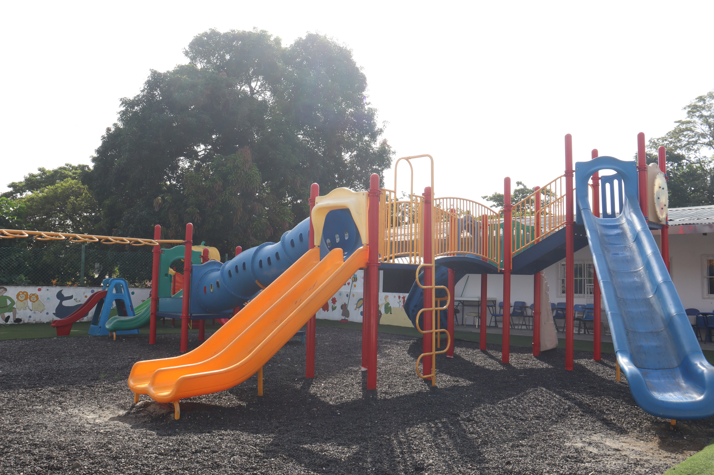

01 · Propósito
Una propuesta con propósito
Aquí se incorporará el contenido institucional final de Instalaciones.
Enfoque formativo
→

Conoce los espacios que reciben diariamente a nuestra comunidad escolar.

Conoce los espacios que reciben diariamente a nuestra comunidad escolar. En esta sección se añadirá la información institucional definitiva cuando sea aprobada.
Aquí se incorporará el contenido institucional final de Instalaciones.
Este espacio está preparado para explicar los procesos, recursos y oportunidades de la comunidad BPVDA.
Familias, estudiantes y educadores construyen juntos cada etapa del aprendizaje.
Desliza o disfruta del recorrido continuo por los espacios y vivencias de nuestra comunidad educativa.





